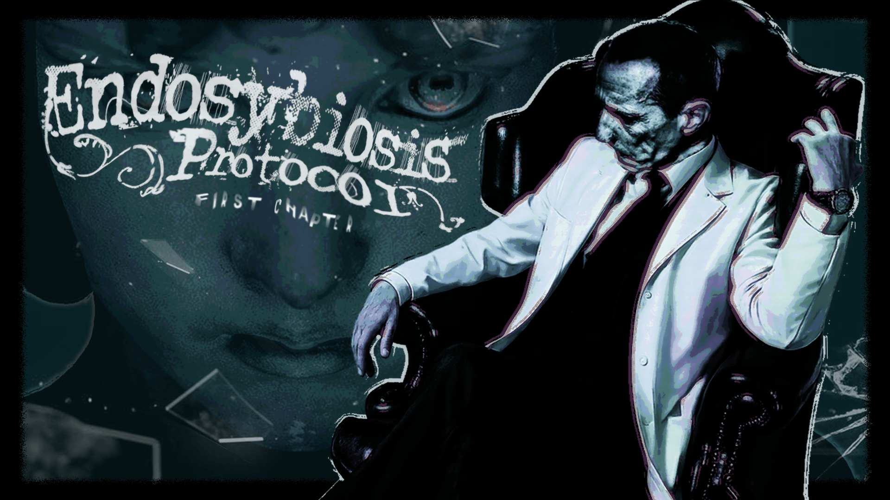

TRACKLINK · RECURSOS HUMANOS
FICHA DE FUNCIONÁRIO
- Nome
- Dr. Aris Valentine
- Cargo
- Botânico responsável
- Lotação
- Estufa subterrânea
- Turno
- Ciclo 147
- Assistência
- V.E.R.A.
- Situação
- Em serviço
Obs.:
CONFIDENCIALSeção atual: SEÇÃO 1/6 INÍCIO
TRACKLINK / TERMINAL INTERNO — V.E.R.A.
CICLO 147. TRÊS PENDÊNCIAS. ASSINE O RELATÓRIO.
terror psicológico point-and-click · capítulo 1
Feito por TRACKLINK — Isabelli Pedrosa · Sophia Barros · Letícia Alencar · Camily Sousa
> acessar registro: O_MUNDO
Um laboratório subterrâneo. Uma estufa que precisa de cuidados. Um funcionário, uma inteligência artificial e um turno de trabalho igual a todos os outros.
Você é Dr. Aris Valentine, botânico da Tracklink. Sua função é manter a estufa funcionando, uma tarefa por vez, com o acompanhamento da V.E.R.A.
Nada no expediente é fora do comum. Só alguns detalhes não batem, e o jogo não explica nenhum deles. Quando você pergunta, a V.E.R.A. consulta o banco de registro. As respostas não batem com o que você lembra.
BOM DIA, DR. VALENTINE. CONSTAM TRÊS PENDÊNCIAS NO SEU EXPEDIENTE.
Sem segunda chance de não ter visto.
TRACKLINK · RECURSOS HUMANOS
Obs.:
CONFIDENCIALTRACKLINK · FICHA DE SISTEMA
CICLO 147EU NÃO MINTO, DOUTOR. EU CONSULTO O REGISTRO.
DOSSIÊ · USO INTERNO
Empresa farmacêutica. Pesquisa vegetal em ambiente controlado.
A Tracklink mantém unidades onde tudo pode ser medido, ajustado e registrado. Cada unidade tem um responsável, uma rotina e um relatório por ciclo.
Lembramos que o relatório só é aceito com todas as pendências concluídas.
Unidades em operação:
ARQUIVADODICIONÁRIO DE BIOLOGIA · p. 147
1. Biol. Relação em que um organismo passa a viver dentro de outro, até que os dois se tornem um só.
Do grego éndon, “dentro”, + symbíōsis, “vida em comum”.
o porquê do nome fica para quem jogar.
> executar: COMO_SE_JOGA.exe
O capítulo 1 é um expediente. Três sistemas no terminal precisam ser concluídos: Microscópio, Nutrientes e Energia. Todo puzzle é um sistema de verdade do laboratório. O relatório só pode ser assinado no fim.
SISTEMA 01
Coletar uma amostra da planta e analisá-la. O resultado é um número. O número abre um cofre.
SISTEMA 02
O que a estufa entrega à planta. Liberado depois da etapa guiada e resolvido na ordem que você quiser.
SISTEMA 03
A energia do laboratório subterrâneo. Também em ordem livre. Sem energia, nada é registrado.
GUIADO
ORDEM LIVRE
FIM DO EXPEDIENTE
A primeira metade conduz pela mão: uma amostra, uma análise, um número, um cofre. Depois disso, o laboratório se abre e a ordem fica com você. O quarto status, o da planta, não se resolve sozinho: ele é calculado a partir de dois dos sistemas.
CADA OBJETO TEM UM USO. ALGUNS TÊM DOIS.
MOUSE
Clique para examinar, interagir e selecionar itens. Arraste um item sobre o outro para combinar.
TECLADO
Digite seu nome na abertura do terminal. Ele fica salvo.
M abre o menu de save.
Recomendado: computador, fone de ouvido e nenhuma pressa.
Revela manchas escondidas nas paredes. O que a luz mostra não estava no relatório.
Anotações esquecidas no fundo das gavetas. Nenhuma está assinada. Ninguém pediu para você ler.
leia mesmo assim.
Algumas gavetas não abrem por bem. Para forçá-las, o que você precisa já está em algum lugar do laboratório.
TRANCADO> abrir pasta: BASTIDORES/
Como o jogo foi feito. Anotações da equipe, arquivadas junto com o resto.
NOTA 00 · A PERGUNTA
“Dá para fazer um jogo de terror sem nenhum susto?”
A inspiração principal foi Rusty Lake, com um pouco de No, I'm Not a Human. O terror vem da construção psicológica, não do susto.
APROVADONOTA 01
O jogo foi feito no GDevelop, que funciona por eventos e condições: quando isto acontecer, faça aquilo.
NOTA 02
O inventário, os cliques e o painel do terminal foram montados do zero, condição por condição.
NOTA 03
Cada sistema é uma variável, e o progresso fica num só lugar: o painel do terminal. O jogador sempre sabe o que falta, sem tutorial.
NOTA 04
A arte foi feita com edição de imagem e photobashing: juntando fotos e pintando por cima até chegar no clima do laboratório.
NOTA 05
A abertura não tem imagem nenhuma. É só texto num terminal, com efeitos de CRT, Bloom e Glitch.
NOTA 06
O nome que o jogador digita na abertura fica salvo para os próximos capítulos.
NOTA 07
A tela de carregar jogo é uma ficha médica. No lugar de “tempo de jogo”, ela mostra “tempo em observação”.
ARQUIVADO> imprimir: FICHA_TECNICA
ARQUIVO Nº 147 · FICHA DO JOGO

FICHA CONFERIDA. NENHUMA DIVERGÊNCIA ENCONTRADA.
> assinar: RELATORIO_CICLO_147
Três pendências esperam por você. Use mouse e teclado. Dentro do jogo, a tecla M abre o menu de save.
Carrega cerca de 54 MB. O som liga junto.
ACESSO NEGADO
TERMINAL MÓVEL NÃO AUTORIZADO.
Este protocolo exige mouse e teclado. Salve o link e acesse de um computador.
ESC sai da tela cheia · M abre o menu de save